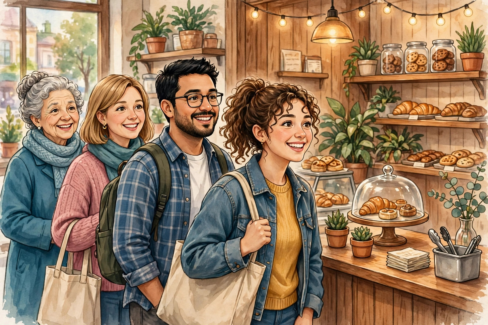

দোকানে কাস্টমার আনার ১০টি উপায়

ভালো দোকান সাজিয়েছেন, সেবাও রাখছেন — তবু কাস্টমার কম? তাহলে প্রচারের অভাব। একটা কঠিন সত্য মেনে নিন: ভালো সেবা থাকলেও মানুষ জানবে কী করে? নিচের ১০টি উপায়ের বেশিরভাগই ফ্রি বা খুব কম খরচে করা যায়। প্রতিটার কেন কাজ করে ও কীভাবে করবেন — দুটোই ব্যাখ্যা করলাম।
১. 📱 WhatsApp স্ট্যাটাসে নিয়মিত আপডেট
কেন কাজ করে: আপনার নম্বর যাদের ফোনে সেভ আছে, তারাই আপনার স্ট্যাটাস দেখে — এরা আপনার চেনা এলাকার মানুষ, অর্থাৎ সম্ভাব্য কাস্টমার। রোজ বিজ্ঞাপন দেওয়ার চেয়ে সস্তা ও কার্যকর মাধ্যম আর নেই।
কীভাবে: নতুন চাকরির বিজ্ঞপ্তি, স্কিমের খবর, দোকানের অফার — রোজ ১-২টা স্ট্যাটাস দিন। শুধু বিজ্ঞাপন নয়, উপকারী তথ্য দিন (যেমন "ভোটার কার্ড সংশোধনের শেষ তারিখ...") — তাতে মানুষ স্ট্যাটাস দেখার অভ্যাস করে।
২. 📋 দোকানের বাইরে স্কিম-আপডেট বোর্ড
কেন কাজ করে: পথচলতি মানুষ কৌতূহলে দাঁড়িয়ে পড়ে — এটাই ফ্রি বিজ্ঞাপন। সরকারি স্কিমের খবরে গ্রামের মানুষের আগ্রহ সবচেয়ে বেশি।
কীভাবে: একটা ব্ল্যাকবোর্ডে বড় হরফে লিখুন, যেমন: "PM কিসানের ২৪তম কিস্তির আপডেট • ফর্ম ফিলাপ চলছে"। সপ্তাহে একবার বোর্ড আপডেট করুন — পুরনো লেখা থাকলে কেউ দাঁড়াবে না।
৩. 📄 এলাকায় পোস্টার ও লিফলেট
কেন কাজ করে: চায়ের দোকান, মুদি দোকান, অটো স্ট্যান্ড — যেখানে মানুষ আড্ডা দেয়, সেখানে আপনার নাম চোখে পড়ে। একটা পোস্টার মাসের পর মাস কাজ করে।
কীভাবে: A4 সাইজে নিজের প্রিন্টারেই ছাপান — খরচ প্রায় শূন্য। পোস্টারে পরিষেবার তালিকা + ফোন নম্বর বড় করে লিখুন। দোকান মালিকের অনুমতি নিয়ে লাগান।
৪. 🎉 উৎসবে ছাড়ের অফার
কেন কাজ করে: মানুষ অফার মনে রাখে, আর অফারের সাথে দোকানটাও মনে রাখে। উৎসবের সময় সবাই খরচের মুডে থাকে — ছোট ছাড়েও ভিড় বাড়ে।
কীভাবে: দুর্গাপুজো, ঈদ, সরস্বতী পুজোর সময় "উৎসব ছাড়" ঘোষণা করুন। বোর্ডে ও WhatsApp স্ট্যাটাসে প্রচার করুন। ছাড়ের নিয়ম সহজ রাখুন — জটিল শর্তে কেউ আগ্রহ পায় না।
৫. 🤝 রেফারেলে পুরস্কার
কেন কাজ করে: "বন্ধুকে নিয়ে এলে দুজনেরই ছাড়" — একজন কাস্টমার আরেকজনকে নিয়ে আসবে। নতুন কাস্টমার পাওয়ার সবচেয়ে সস্তা উপায় এটাই, কারণ বিশ্বস্ত মানুষের কথায় মানুষ আসে।
কীভাবে: মুখে মুখে ঘোষণা করুন, কাউন্টারে ছোট নোটিশ টাঙান। রেফার করা কাস্টমারের নাম খাতায় লিখে রাখুন — পরে ছাড় দিতে ভুলবেন না।
৬. 🏫 ফর্মের সিজনে স্কুল-কলেজের কাছে প্রচার
কেন কাজ করে: ভর্তি বা চাকরির ফর্মের সময় ছাত্রছাত্রীদের একসাথে দরকার হয় — সিজনাল ভিড়ই বছরের বড় আয়। সঠিক সময়ে সঠিক জায়গায় থাকলে কাস্টমার নিজে আসে।
কীভাবে: ভর্তি/ফর্মের মরসুমের ১-২ সপ্তাহ আগে শিক্ষা প্রতিষ্ঠানের আশেপাশে লিফলেট দিন। গেটের বাইরে দাঁড়িয়ে নয় — আশেপাশের দোকানে রেখে আসুন।
৭. 😊 ভালো ব্যবহার = মুখে মুখে প্রচার
কেন কাজ করে: একজন খুশি কাস্টমার ৫ জনকে আপনার কথা বলবে — গবেষণায় প্রমাণিত। এর চেয়ে ভালো বিজ্ঞাপন আর নেই, আর এটা সম্পূর্ণ ফ্রি! উল্টোদিকে একজন অসন্তুষ্ট কাস্টমার ১০ জনকে নেগেটিভ কথা বলে।
কীভাবে: ধৈর্য ধরে বোঝান, হাসিমুখে কথা বলুন, নাম ধরে ডাকুন। ছোট এই অভ্যাসগুলোই মুখে মুখে প্রচার তৈরি করে।
৮. ⏰ কথা দিয়ে সময়ে ডেলিভারি
কেন কাজ করে: "বিকেলে দিয়ে দেবো" বলে বিকেলেই দিলে কাস্টমারের মনে গেঁথে যায় — এই দোকানদার কথার দাম রাখে। জরুরি কাজে মানুষ প্রথমে আপনাকেই খুঁজবে।
কীভাবে: অসম্ভব ডেডলাইন দেবেন না — বাস্তবসম্মত সময় বলুন। কাজ শেষ হলে WhatsApp-এ "আপনার কাজ রেডি" জানিয়ে দিন।
৯. 🎁 ছোট ফ্রি সেবা
কেন কাজ করে: ফর্ম জমার আগে ফ্রিতে একবার চেক করে দেওয়া — আপনার খরচ শূন্য (২ মিনিট সময়), কিন্তু কাস্টমারের মনে জায়গা পাকা। সে ভাববে — এই দোকানদার আমার ভালো চায়।
কীভাবে: প্রতিটা ফর্ম সাবমিটের আগে একবার চোখ বুলিয়ে নিন, ভুল থাকলে ধরিয়ে দিন। এই অভ্যাসই আপনাকে পাশের দোকান থেকে আলাদা করবে।
১০. 📍 Google-এ দোকানের নাম
কেন কাজ করে: নতুন এলাকায় কেউ এলে বা জরুরি দরকারে মানুষ Google-এ "কাছাকাছি সাইবার ক্যাফে" সার্চ করে। তালিকায় আপনার দোকান থাকলে ফোন নম্বরসহ দেখাবে — ঘরে বসেই কাস্টমার পাবেন।
কীভাবে: Google Maps-এ দোকান যোগ করা ফ্রি। দোকানের ছবি, সঠিক ঠিকানা, খোলার সময় ও ফোন নম্বর দিন। কাস্টমারদের রিভিউ দিতে বলুন — ভালো রিভিউ মানেই বেশি কাস্টমার।
🏁 শেষ কথা
১০টা উপায় একসাথে করতে হবে না — যেকোনো ৩টা বেছে নিয়ে এই সপ্তাহেই শুরু করুন। সবচেয়ে সহজ শুরু: WhatsApp স্ট্যাটাস + দোকানের বাইরে আপডেট বোর্ড + ভালো ব্যবহার। ফল পেলে বাকিগুলো যোগ করুন।
✅ মনে রাখুন: প্রচারে টাকা ঢালার আগে সেবার মান ঠিক করুন। খারাপ সেবার প্রচার মানে বেশি মানুষকে হতাশ করা — উল্টো ফল হবে! আগে ভালো সেবা, তারপর প্রচার — এই ক্রমটা কখনো উল্টাবেন না।
❓ সাধারণ প্রশ্নোত্তর
প্রশ্ন: প্রচারে কত টাকা খরচ করব?
উত্তর: শুরুতে প্রায় শূন্য টাকায় শুরু করুন — WhatsApp স্ট্যাটাস, আপডেট বোর্ড, ভালো ব্যবহার, Google Maps তালিকা — সব ফ্রি। ফল পেলে পরে পোস্টার-লিফলেটে সামান্য খরচ করুন।
প্রশ্ন: কতদিনে ফল পাব?
উত্তর: মুখে মুখে প্রচারে ২-৩ মাস লাগে। ধৈর্য ধরুন — নিয়মিত প্রচার + ভালো সেবা থাকলে কাস্টমার বাড়বেই। এক সপ্তাহে হাল ছাড়বেন না।
প্রশ্ন: অনলাইনে বিজ্ঞাপন দেব?
উত্তর: পাড়ার দোকানের জন্য Facebook-এ টাকা দিয়ে বিজ্ঞাপনের দরকার নেই। ফ্রি উপায়গুলোই (WhatsApp, Google Maps, পোস্টার) আপনার এলাকায় বেশি কার্যকর।
প্রশ্ন: সেবা ভালো না হলে প্রচার করব?
উত্তর: না! আগে সেবার মান ঠিক করুন। খারাপ সেবার প্রচার মানে বেশি মানুষকে হতাশ করা — এতে ক্ষতি ছাড়া লাভ নেই।
🔗 আরও আপডেট পেতে যুক্ত থাকুন
🌐 ওয়েবসাইট: আরও নতুন নতুন তথ্যের জন্য আমাদের ওয়েবসাইট ভিজিট করুন: https://aicombo90.github.io/dafadar-online-seva/ — ওয়েবসাইটটা মোবাইলে সেভ/বুকমার্ক করে রাখুন যাতে হারিয়ে না যায়! পরের বার এলে নতুন তথ্য দেখতে পাবেন।
💬 WhatsApp গ্রুপ: সরকারি প্রকল্প ও চাকরির তাজা আপডেট সবার আগে পেতে আমাদের WhatsApp গ্রুপে যোগ দিন: গ্রুপে যোগ দিন
📺 YouTube: ভিডিওতে দেখতে চান? আমাদের YouTube চ্যানেল সাবস্ক্রাইব করুন: Dafadar Online Seva